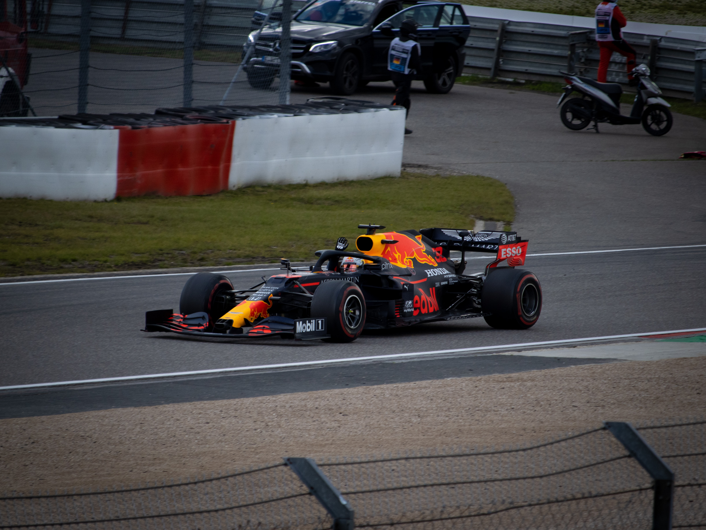
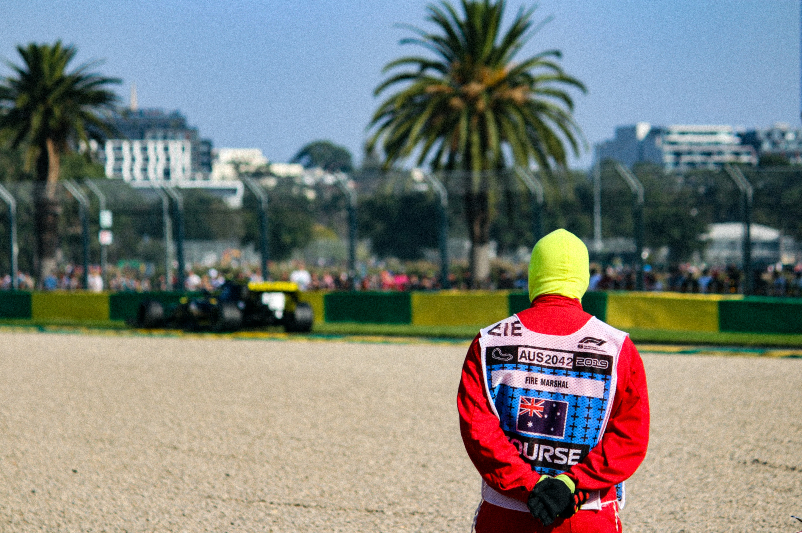
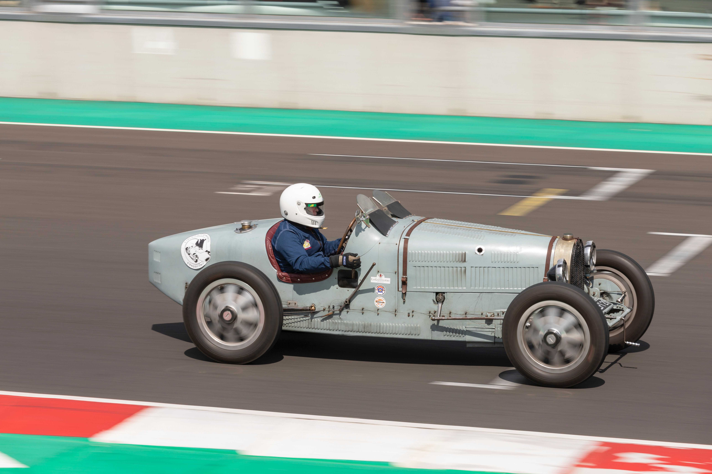

Formule 1
Wat is formule 1?
Formule 1 is de hoogste klasse in de autosport in het algemeen en in de formuleracing in het bijzonder onder organisatie van de Fédération Internationale de l'Automobile. De sport staat aan de technologische top van alle autosport. Formule 1-auto's bereiken (variërend per circuit) snelheden tot ruim boven de 300 km/h waarbij de turbomotor tot 15.000 toeren per minuut (tpm) begrensd is. De motoren kunnen nog hogere toerentallen bereiken, maar dit is niet toegestaan. In de auto's kan de zijwaartse versnelling in de bochten oplopen tot meer dan 5 g. De prestaties van de auto's zijn in sterke mate afhankelijk van elektronica (hoewel tractiecontrole en andere coureursondersteuning verboden zijn), aerodynamica, ophanging en banden.
Het Formule 1-seizoen bestaat uit een serie races, een individuele race wordt "Grand Prix" genoemd. De race wordt verreden op gespecialiseerde circuits en in mindere mate ook op afgesloten stratencircuits. De resultaten van elke race worden gebruikt om ieder jaar twee wereldkampioenen te bepalen: een voor de coureurs en een voor de constructeurs. Zowel coureurs als constructeurs moeten in het bezit zijn van een superlicentie, de hoogste racelicentie die wordt uitgegeven door de FIA.
Europa is het traditionele centrum van de Formule 1 waar (vrijwel) alle teams hun basis hebben en waar ongeveer de helft van alle races wordt gehouden. Het bereik van de Formule 1 is de afgelopen jaren sterk uitgebreid en grands prix worden over de hele wereld gehouden. Enkele races in Europa en Amerika zijn vervallen ten gunste van Azië en het Midden-Oosten. In 2009 werden negen van de achttien races buiten Europa gehouden.
Formule 1 is een zeer groot televisie-evenement waar door miljoenen mensen naar gekeken wordt. De Formula One Group, is de houder van de commerciële rechten. Als de duurste sport ter wereld kunnen de economische effecten significant zijn en worden interne politieke en financiële debatten vaak op de voet gevolgd door de media. Er kijken wereldwijd miljoenen mensen live naar de races, wat de constructeurs vervolgens hoge commerciële sponsorcontracten oplevert.
Bron: Wikipedia
Geschiedenis
De Formule 1 heeft zijn wortels liggen in het Grand Prix Racing van de jaren twintig en dertig van de twintigste eeuw. De "formule" in de naam verwijst naar een pakket regels waar alle deelnemers en auto's aan moeten voldoen. Er werd tot oprichting van de nieuwe formule 1-klasse besloten in 1946, na het einde van de Tweede Wereldoorlog. Er werden dat jaar al enkele races gehouden maar de World Drivers' Championsship werd pas in 1947 officieel. De eerste kampioenschapsrace werd gehouden op Silverstone in Groot-Brittannië in 1950. Het kampioenschap voor constructeurs volgde in 1959. In de jaren zestig en zeventig bestonden er in Groot-Brittannië en Zuid-Afrika nationale kampioenschappen. Tot in de jaren tachtig van de twintigste eeuw werden er races buiten de kampioenschapskalender om georganiseerd. Door de stijgende kosten was dit echter commercieel niet meer haalbaar en dit fenomeen verdween in 1983.
Bron: Wikipedia
Teams

MERCEDES
Mercedes-Benz is tegenwoordig betrokken bij de Formule 1 als eigenaar van het Mercedes-AMG Petronas F1 Team, met zijn basis in het Verenigd Koninkrijk en gebruikmakend van een Duitse licentie.
- Totaal punten: 613,5
- Lewis Hamilton: 387,5
- Valterie Bottas: 226
RED BULL RACING HONDA
Red Bull Racing is een Oostenrijks Formule 1-team, gevestigd in Groot-Brittannië en actief sinds 2005.
- Totaal punten: 585,5
- Max Verstappen: 395,5
- Sergio Perez: 190
FERRARI
Scuderia Ferrari is de racedivisie van de Italiaanse autofabrikant Ferrari en het raceteam dat deelneemt aan Formule 1-races. De Scuderia is het oudste raceteam in de Formule 1.
- Totaal punten: 323,5
- Charles Leclerc: 159
- Carlos Sainz: 164,5
MCLAREN MERCEDES
McLaren is een raceteam dat onderdeel is van McLaren Racing. McLaren werd opgericht in 1963 en reed zijn eerste Grand Prix in 1966. Het is daarmee een van de oudste teams in de Formule 1.
- Totaal punten: 275
- Lando Norris: 160
- Daniel Ricciardo: 115
ALPINE RENAULT
Alpine F1 Team, voorheen genaamd Renault F1 Team, is een Frans autosportteam actief in de Formule 1.
- Totaal punten: 155
- Esteban Ocon: 74
- Lance Stroll: 81
ALPHATAURI HONDA
Scuderia AlphaTauri, voorheen Scuderia Toro Rosso, is een Italiaans Formule 1-team dat actief is sinds 2006. En is het tweede team van Red Bull op de startgrid naast Red Bull Racing.
- Totaal punten: 142
- Pierre Gasly: 110
- Yuki Tsunoda: 32
ASTON MARTIN MERCEDES
Aston Martin F1 Team is een Brits Formule 1-team, dat sinds 2021 terug deel neemt aan de formule 1 sinds 1960.
- Totaal punten: 77
- Sebastian Vettel: 43
- Lance Stroll: 34
WILLIAMS MERCEDES
Williams F1 is een Brits Formule 1-team, en een van de succesvolste teams ooit. Het werd in 1977 opgericht door Frank Williams en Patrick Head. Het team behaalde zijn grootste successen in de jaren tachtig en negentig.
- Totaal punten: 23
- George Russel: 16
- Nicolas Latifi: 7
ALFA ROMEO RACING FERRARI
Alfa Romeo Racing is een Zwitsers Formule 1-team. Dat in 2018 na 30 jaar afwezigheid haar rentree maakte in de Formule 1.
- Totaal punten: 13
- Kimi Räikkönen: 10
- Antonio Giovinazzi: 3
HAAS FERRARI
Het Haas F1 Team (voorheen bekend als Haas Formula LLC en Haas Racing Developments) is een Amerikaans Formule 1-team dat actief is vanaf 2016 (oorspronkelijk 2015). Het team is opgericht in 2014 door de teameigenaar van het NASCAR-team Stewart Haas Racing, Gene Haas.
- Totaal punten: 0
- Mick Schumacher: 0
- Nikita Mazepin: 0